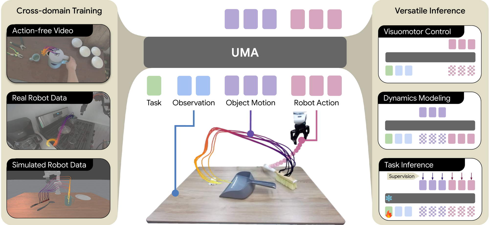
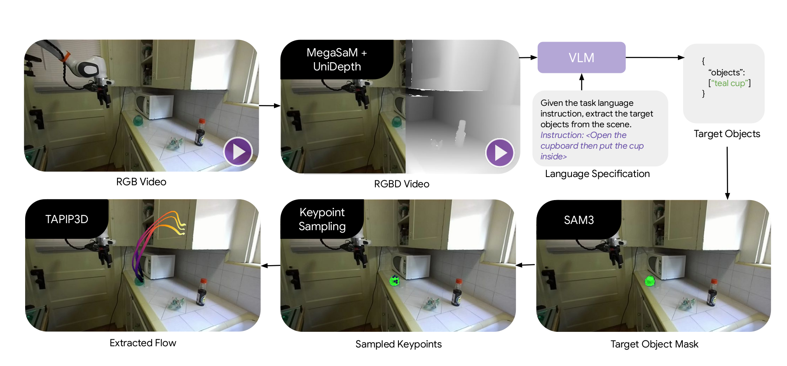
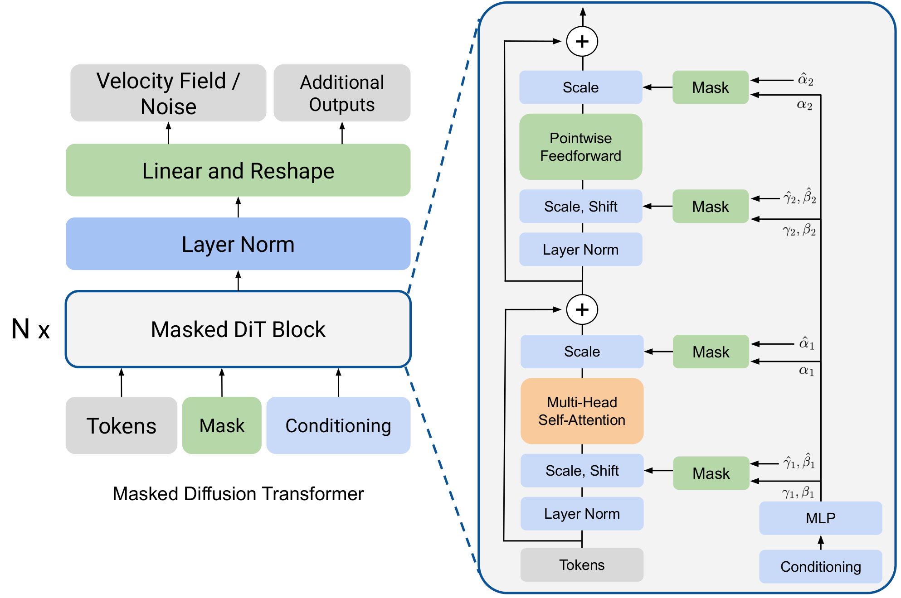
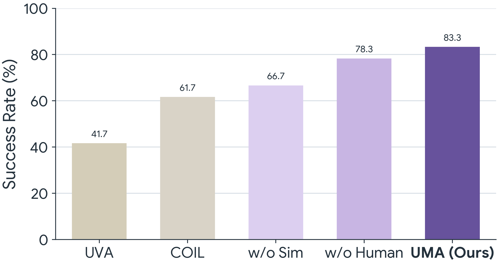
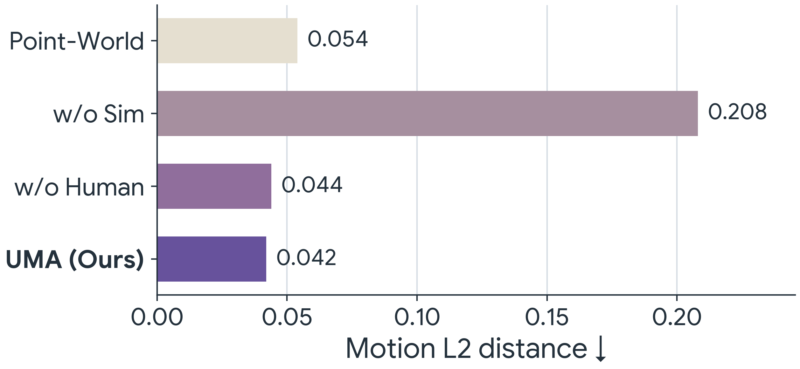
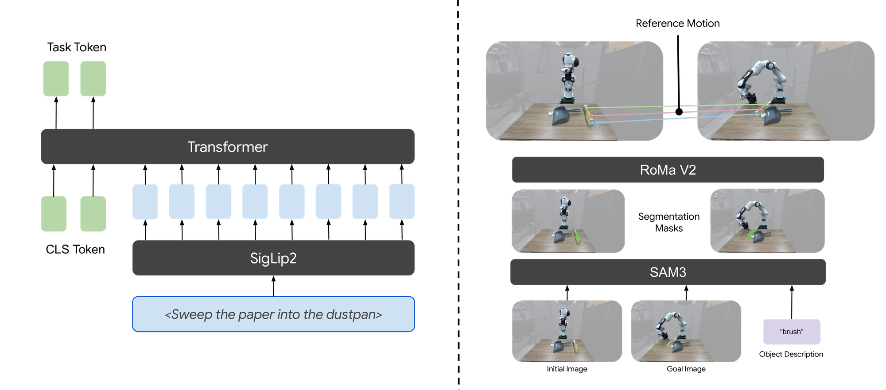
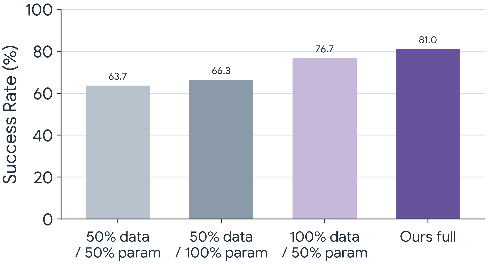

We present Unified Motion-Action (UMA) Model, an approach that uses 3D object motion trajectories as a shared interface to bridge visuomotor control and dynamics modeling. UMA treats object motion and robot actions as co-evolving variables under a masked generative objective, in which the mask pattern determines both the supervision regime during pretraining and the inference mode at deployment. Using hindsight-relabeled motion contexts and a contrastive objective that disentangles task intent from scene geometry, UMA enables multi-task pretraining across heterogeneous data sources without requiring manually annotated task instructions. At deployment, the same pretrained parameters support motion-conditioned visuomotor control, motion-based dynamics modeling, and task adaptation from few-shot demonstrations. Pretrained on a mixture of robot demonstrations, human videos, and simulated data, UMA consistently outperforms state-of-the-art baselines specialized for each inference mode.

UMA represents object motion through 3D keypoints sampled on object surfaces and tracked across time, a structured yet generic representation bridging dynamics modeling and visuomotor control, obtainable from monocular video and defined independently of any specific embodiment.

UMA is is trained with a flow matching objective to predict randomly masked object motion and robot actions, conditioned on a task latent and visual observation. We additionally supervise the task encoder with contrastive loss to ensure semantic consistency of the learned task representation, enabling versatile task conditioning and adaptation at deployment.
A four-stage pipeline extracts 3D keypoint trajectory supervision from monocular RGB videos, with no ground-truth depth, camera intrinsics, or action labels: MegaSaM estimates cameras and depth, UniDepth aligns depth to metric scale, a vision-language model with SAM 3 segments the task-relevant object, and TAPIP3D tracks the sampled keypoints.

The UMA policy backbone consist of Masked DiT blocks, each applying adaptive layer norm with two independent sets of modulation parameters, one for masked target tokens and one for clean conditioning. To exploit the spatial-temporal sparsity, we factorize attention into spatial, temporal, and context patterns rather than dense global attention.

Pretrained on data that never overlaps the real-world test environments, UMA outperforms the strongest baseline by 20–25 percentage points on every task, without task-specific finetuning. Predicted end-effector trajectories are overlaid.
Insertion. 6-DoF manipulation
Sweeping. Tool use
Folding. Deformable object manipulation

Success rates for motion-conditioned visuomotor control, averaged over the three evaluation tasks (20 trials each).
Given a candidate action sequence, the same model predicts the resulting object motion. UMA reduces motion-prediction MSE from 0.054 (PointWorld) to 0.042, producing sharper dynamics than a dedicated dynamics model.
Insertion. Motion rollout conditioned on actions
Folding. Motion rollout conditioned on actions
Sweeping. Motion rollout conditioned on actions

Mean squared error (MSE) of predicted object motion, averaged across real-world tasks; lower is better.
UMA adapts to a new task by optimizing only the task latent on 25 demonstrations while keeping all other parameters frozen. From action-free human videos alone, it outperforms UVA by approximately 25 percentage points on every task.
Adapted from human videos. Folding with motion supervision
Adapted from robot demos. Insertion with motion and action supervision

Success rates for adapting to new tasks from 25 demonstrations under action supervision and motion supervision, averaged across tasks.

Since UMA is trained with a semantically meaningful task encoder with contrastive loss, replacing the task latent conditions the same pretrained model on alternative task specifications without fine-tuning: language-conditioned control derives the task latent from a text instruction via a SigLIP 2 text encoder, and goal-conditioned control converts a goal image into a sparse start-to-end reference motion via SAM 3 segmentation and RoMaV2 point matching.
Goal-conditioned. Move the mug to the shelf, specified by a goal image
Language-conditioned. “Put the cable in the container”
UMA generalizes across everyday objects and skills beyond the main evaluation suite.
Shelving the mug
Unloading the toaster
Wrangling the cable
Tucking away the shoe
Gathering the carrot
Parking the toy car

Model design ablation over three simulated tasks.
We evaluate three architecture variants trained on simulated robot data: Action-only (no motion prediction), Separate Heads (independent decoder heads), and Dense Attention (full dense attention at matched parameter count and training budget). Jointly predicting motion alongside actions is essential: Action-only trails UMA by a wide margin, especially on tool use, where coupled object-action dynamics dominate. Separate Heads improves over Action-only but remains slightly worse on average, indicating that a shared head better captures motion-action coupling. Dense Attention underperforms at matched budget, showing that the structured attention facilitates information fusion.

Scaling behavior with training data and model size.
We evaluate the scalability of UMA by varying both the amount of training data and the model size, reporting the average success rate over the simulated tasks (100 trials each). Both data scale and parameter scale contribute to performance, with the full-data 600M-parameter model achieving the strongest result.
@article{anonymous2026uma,
title = {Unified Motion-Action Modeling for Heterogeneous Robot Learning},
author = {Anonymous Authors},
journal = {OpenReview},
year = {2026}
}